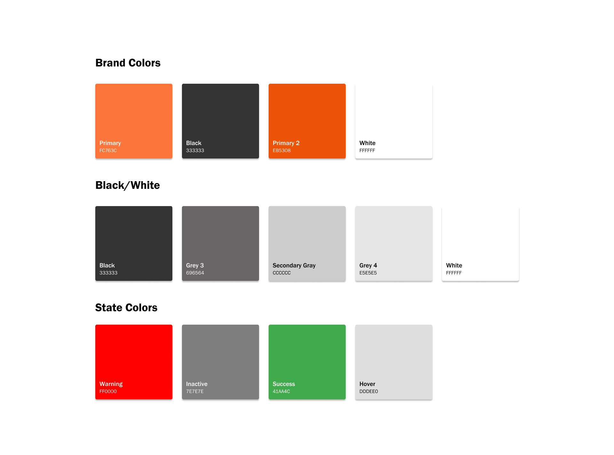

What do others do well?
Competitive Analysis
To gather insights on what to focus on with the redesign, I analyzed competitors like Spotify and Apple Music to identify potential features that could enhance SoundCloud’s user experience.

Streaming web app redesign and innovation
July 2024-August 2024
Lead UX/UI designer
Conducting research, digital wireframing, and mockups, creating high-fideltiy prototypes, conducting usability studies, ensuring accessibility, iterating on designs
SoundCloud's web application needed a design refresh and enhanced features to align with modern trends and boost user engagement.
How can we improve SoundCloud’s design and introduce features that engage users more effectively?
These goals revolved around changes to the application that would be beneficial for new and experienced users of SoundCloud.
Refresh the web application's design.
Introduce new features to increase user engagement.
Improve the user flow for a seamless experience.
To gather insights on what to focus on with the redesign, I analyzed competitors like Spotify and Apple Music to identify potential features that could enhance SoundCloud’s user experience.
Competitors offer powerful search engines.
Solution: Integrate search functionality for both personal libraries and the site’s catalog.
SoundCloud is unique as both a streaming service and social platform.
Solution: Add personalization options for user profiles and artist uploads.
Creating a playlist is not an easily accessed feature of the site.
Solution: Create a simple user flow for creating a new playlist.
The redesign aimed to modernize SoundCloud’s look while preserving its core features and improving usability. I focused on trends like minimalism, bold typography, and improved information architecture.
SoundCloud UI KitRetained brand aligned colors.
Used rounded icons from the Google Material Design Kit for a sleek look.
Selected Franklin Gothic for its modern, versatile, and readable style.
A sidebar was designed in place of the header function of the application to optimize navigation on larger screens.

Both SoundCloud’s current mobile and web media player was used in reference to designing a a media player for this study.

Added a tab bar to reduce infinite scrolling by organizing content into key categories.
Soundcloud’s website’s signature is its song card display. These cards display not just the song information but also the EQ of each song alongside other users' comments as the song is played. To keep a clean presentation that correlated with the minimal design style, I made the EQ visible only when a song was played.
An overlay was created on the search results page to allow users to filter their search options.
A color customizer was created to allow users to customize their profile pages. Options to change the font, background, and button colors were created. Users also gained access to edit their profile's information. This feature was made available through the edit button on user's profile page.
UI elements were created to be used in the process of making playlists. Users would now be able to create a playlist without having to upload a song or album.
An option to upload an album animation alongside the album artowrk was created as one of the new customizing features for artists.
User testing focused on evaluating the redesign’s usability from both new and experienced users' perspectives. The changes made to the final prototypes centered the difficulties users had and possible readability issues that occur due to the current information architecture.
Moved the search tool to the navigation area for easier access across all pages, eliminating confusion.

Added options to close the sidebar and recommended panel, reducing clutter and enhancing focus.
To eleviate the crowded look of the profile settings, a tab menu that allows to switch between changing the display and user information was created.
Users were given the option to view the application in dark mode and whether they would prefer to view the site with the settings other's user's have for their profiles. This was made available in the startup of the application with overlays and when users clicked the settings icon.